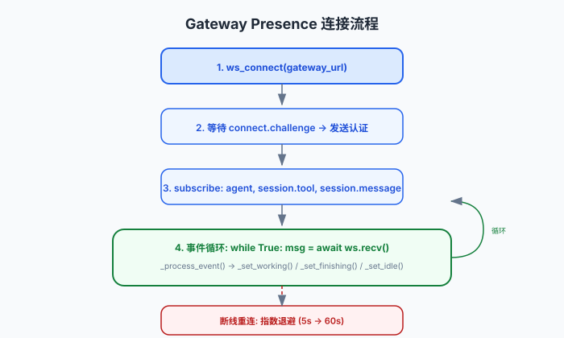

Gateway Presence：实时状态感知
Gateway Presence 模块通过 WebSocket 连接 OpenClaw Gateway，监听代理的事件流，自动推导 working/idle/finishing 状态。它不修改 Gateway，只做只读观察。
了解 WebSocket 基本概念。建议先阅读代理发现，了解代理如何被注册。
连接流程

图：从连接到事件循环的完整流程。断线后使用指数退避（5s → 60s）重连。
建立 WS 连接
ws_connect(gateway_url) 连接到 OpenClaw Gateway
认证
等待 connect.challenge，发送 connect 认证（token + client info）
订阅事件
subscribe("agent")、subscribe("session.tool")、subscribe("session.message")、subscribe("sessions.changed")
事件循环
while True: msg = await ws.recv() → _process_event(event_type, payload)
状态机
idle <---> working <---> finishing ---> idle
^ | |
| +---(stale)----+
|
+--- manual override (TTL 30s)| 状态 | 触发条件 | 超时 |
|---|---|---|
| idle | 无活跃活动 120 秒 | — |
| working | lifecycle start、工具调用、用户消息、run-started | 6h（活跃 run/tool 超时） |
| finishing | lifecycle end、工具完成、assistant 消息 | 12s grace period |
| manual override | office.py 手动设置 | 30s TTL |
事件处理
# gateway_presence.py:338
def _process_event(event_type, payload):
if event_type == "agent":
if phase in ("start", "accepted", "running"):
_set_working(agent_id, "Working", "agent-lifecycle", run_id)
elif phase in ("end", "done", "final", "complete"):
_set_finishing(agent_id, "agent-lifecycle", run_id)事件映射规则：
| 事件类型 | 子事件 | 状态转换 |
|---|---|---|
agent + lifecycle | start/accepted/running | → working |
agent + lifecycle | end/done/final/complete | → finishing |
session.tool | 工具调用 | → working(task) |
session.tool | 工具完成 | → finishing |
session.message | role=user | → working |
session.message | role=assistant | → finishing |
sessions.changed | run-started | → working |
Run/Tool 精确追踪
通过 runId 和 toolCallId 精确跟踪每个代理的活跃操作，避免误判：
_mark_run_active(agent_id, run_id) 和 _mark_tool_active(agent_id, tool_id) 维护内存中的活跃操作字典。只有当所有 run 和 tool 都超时后才判定 idle。
设计亮点
Gateway Presence 不向 Gateway 发送任何命令，只消费事件。这意味着它不会干扰 Agent 的正常运行，即使 Presence 模块崩溃，Agent 仍然正常工作。
代理完成任务后不会立刻变 idle，而是有一个 12 秒的 grace period，避免 UI 闪烁。如果在此期间有新的工具调用，代理会重新回到 working。
历史背景：此模块取代了旧的 office.py CLI 手动更新模式。详见Presence 架构的诞生与演进。